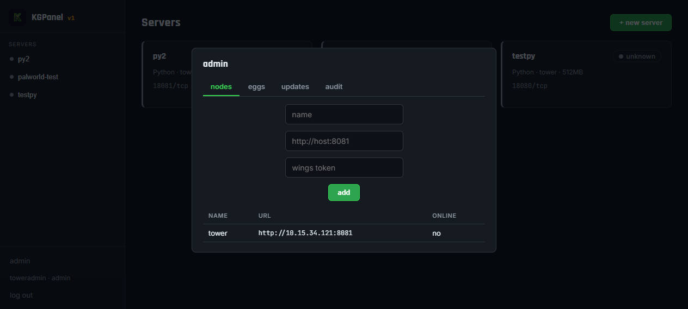
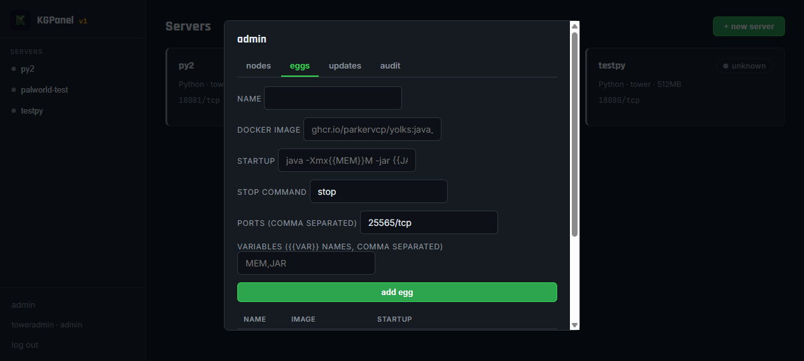
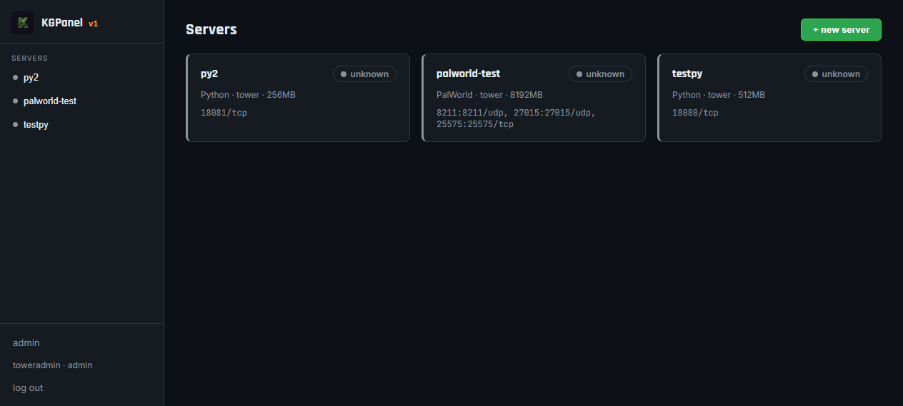
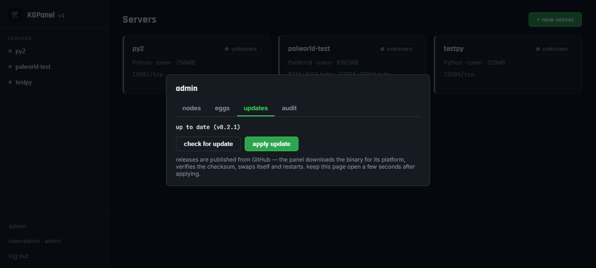

KGPanel is a game-server management panel: a web UI + API (panel) and a per-node agent (wings) that creates and runs each game in its own Docker container with memory & CPU caps. Everything is a small Go binary plus a JSON data directory — no PHP, no database, no Redis.
This walkthrough takes you end to end: install → first run → add a game → point a domain at it with free SSL. Screenshots are from a live KGPanel install.
1Requirements
| Part | Minimum | Notes |
|---|---|---|
| Panel host | 512 MB RAM, 200 MB disk | Linux/Windows/macOS; needs port 8080 |
| Wings node | 2 GB RAM + your games | Linux or Windows w/ Docker; port 8081 + game ports; Docker Engine required |
| Domain (optional) | — | a domain on Cloudflare for HTTPS (section 11) |
2Download or build
Grab the latest from the Releases page on GitHub (kgpanel-linux-amd64, kgpanel-windows-amd64.exe, wings-linux-amd64, …). Or build from source:
git clone https://github.com/MrKnuckls/kgpanel.git
cd kgpanel
make build # produces dist/kgpanel and dist/wings3Install the panel
Binary (Linux)
sudo install -m 0755 kgpanel-linux-amd64 /usr/local/bin/kgpanel
sudo mkdir -p /var/lib/kgpanel
openssl rand -hex 32 # save this secret
sudo kgpanel --listen :8080 --data /var/lib/kgpanel --secret YOUR_SECRETSee docs/INSTALL.md for the systemd service unit, the Windows NSSM service, and the Docker Compose option. To log in later you'll need the admin account you create on first run (section 4), not the secret above.
4First run — create your admin
Open http://<your-ip>:8080. Because no account exists yet, the sign-in page shows the setup form — any username + 8+ char password creates your admin:

you · admin.5Install wings (the game node)
sudo install -m 0755 wings-linux-amd64 /usr/local/bin/wings
sudo mkdir -p /var/lib/wings
# systemd unit (see INSTALL.md); then:
sudo kgpanel 2>/dev/null; sudo wings --listen :8081 --token YOUR_WINGS_TOKEN --data /var/lib/wingsWindows: install Docker Desktop, put docker on your PATH, run the wing.exe with the same flags. http://<wings-host>:8081/v1/health should return {"status":"ok",…}.
6Add your node in the panel
Go to admin → nodes and add the wings box: a name, its URL (http://<wings-host>:8081), and the same wings token you set above.

7Add an egg (game template)
Back in admin → eggs: name, docker image, startup command, stop command, exposed ports, and template variables. Ready-made eggs ship in eggs/.

8Create your first server
+ new server → pick egg + node + node → set memory + CPU + ports → create. It appears in the grid and starts with the power button.

9The dashboard & live graphs
Open a server: power/restart/stop controls, a live console, and four live graphs — CPU, memory, network, disk — sampled every 5s from the real container. The status badge reflects what wings actually observes, so a running game never shows offline. The disk card shows used and total drive capacity. The connect address under the server name (with a copy button) tells players where to join.
10Change ports / memory / the egg — in the panel
The settings tab edits a server's memory, CPU %, and ports, plus its egg template (image, startup, stop, ports, variables). Save & apply rebuilds the container so the change takes effect immediately — keeping the server running if it was up.

8211:8211/udp) so the connect address stays fixed.11Add a domain + free SSL (works on any OS)
For a public panel, point a domain (already on Cloudflare) at your panel. Cloudflare runs a tunnel from your panel to the edge and serves SSL automatically — no certs to buy, no ports to open, no router config.
Fastest — one command
Three values: an API token (My Profile → API Tokens, zone-edit perms), your account ID (same page), and your domain.
Linux / macOS / WSL:
bash <(curl -fsSL https://raw.githubusercontent.com/MrKnuckls/kgpanel/main/deploy/kgpanel-cloudflare.sh) \
--domain panel.example.com --cf-token "$CF_TOKEN" --cf-account YOUR_ACCOUNT_IDWindows (native PowerShell — no WSL):
powershell -ExecutionPolicy Bypass -File kgpanel-cloudflare.ps1 `
-Domain panel.example.com -CfToken $env:CF_TOKEN -CfAccount YOUR_ACCOUNT_IDOptional: --access you@email.com gates the panel behind a Cloudflare login (repeat for several emails); --dry-run checks without changing anything.
It verifies the token → finds your zone → creates/reuses a tunnel → adds the DNS CNAME (proxied) → programmes the tunnel to your.domain → your panel → installs cloudflared (Docker container, systemd service, or Windows Scheduled Task) → verifies https://your.domain answers.
You'll then hit Cloudflare's gate before the panel loads (this is the Access screen):

No scripts — dashboard only (any OS)
- Cloudflare dashboard → Zero Trust → Networks → Tunnels → Create a tunnel (cloudflared type). Copy the token it shows.
- In Public Hostname:
panel.example.com → HTTP → localhost:8080. - Run the install one-liner the wizard gives for your OS (they include a Windows Service option) — it connects outbound, no router config.
- Confirm the DNS record shows Proxy status: Proxied (that's the free SSL).
- Optional lock-down: Zero Trust → Access → Applications → your panel domain → policy Allow: your email.
12Verify + if something's off
curl -sI https://panel.example.com | head -3Expect 200 (or a 302/307 to the login redirect). 401/403 means the Access gate is on — expected. The panel also self-updates: tag v1.2.3 on a release → Actions builds all platform binaries + checksums → every installed panel/wings updates itself from admin → updates.

| Symptom | Fix |
|---|---|
Panel: secret is required | pass --secret or set KGPANEL_SECRET |
Status unreachable | panel can't reach wings:8081 — check firewall |
Status missing | container not created yet — tap start so wings builds it |
| Sign-in page gone / login rejected | an admin already exists — use those credentials |
| Graphs empty / badge unreachable | restart the panel container once after a wings redeploy |
Full reference: docs/INSTALL.md · KGPanel · MIT licensed.